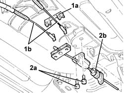

3380A38 LINK/CABLE CONNECTING HANDBRAKE LEVER TO CABLE - R+R
- Path
- Procedures > 33 BRAKING SYSTEM > 3380 HANDBRAKE > 3380A HANDBRAKE CONTROL AND LINKAGE > 3380A38 LINK/CABLE CONNECTING HANDBRAKE LEVER TO CABLE - R+R
- Kind
- repair procedure (removal / refitting; the operation number is the code)
- Applies to
- all engines; all production periods
- Interactive page
- https://sloeber94.github.io/elrnDB-aGt/en/#/125001392
Applies to: all engines; all production periods
 Removing
Removing
 Refitting
RefittingPosition the vehicle on the ramp
Ensure that the ignition key is in the OFF position, then disconnect the negative battery terminal (-).
Name | Connector | |
|---|---|---|
- | Battery | See A1B BATTERY ( BATTERY NEGATIVE ) |
Proceed with removal
Op. 3380A10 HANDBRAKE LEVER - R+R
1. Remove the retainer (1a) and disconnect the handbrake cables (1b).
2. Undo the bolts (2a) and remove the rod/cable connecting the handbrake lever to the cables (2b).

Applies to: all engines; all production periods
Refitting
RemovingPlace the rod/cable connecting the handbrake lever to the cable and secure it using the bolts.
Connect the handbrake cables and secure them using the retainer.
Proceed with refitting
Op. 3380A10 HANDBRAKE LEVER - R+R.
Adjust the travel of the handbrake lever
Op. 3380A04 HANDBRAKE - CHECK TRAVEL.
Connect the negative (-) battery terminal
Remove the car from the ramps.